聚类分析
（1）现有16种饮料的热量、咖啡因含量、钠含量和价格的数据，根据这4个变量对16种饮料进行聚类
系统聚类
这里展示的是离差平方和法（WARD）进行系统聚类。它基于方差分析的思想，同类样品之间的离差平方和应当较小，不同类之间的离差平方和应当较大
$G_t$中样品的离差平方和为
$$W_t=\Sigma_{i=1}^{n_t}(X_{(i)}^{(t)}-\bar{X}^{(t)})’ (X_{(i)}^{(t)}-\bar{X}^{(t)})$$
$k$个类的总组内离差平方和为
$$W=\Sigma_{t=1}^k W_t$$
我们需要当$k$固定时要选择使W达到极小的分类
1 | > head(mydata) |
代码一（比较丑）：
1 | library(cluster) |
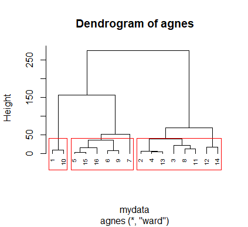
代码二：
1 | #用欧式距离代表样本之间两两相似性 |
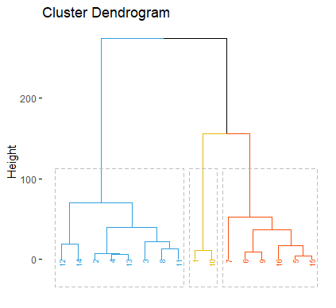
与之前代码的结果是一致的，但是图比较好看嘿嘿嘿
经WARD系统聚类法，我们得到了聚类结果的谱系图，从中我们可以看到饮料分为三类的结果是{12,14,2,4,13,3,8,11},{1,10},{7,6,9,16,5,15}.
动态聚类
这里采用K-means聚类方法展示动态聚类法。
Step1 规定样品间的距离人为定出三个数：$K$（分类数），$C$（类间距离最小值）和$R$（类内距离最大值）；取前K个样品为凝聚点
Step2 计算这$K$个凝聚点两两之间的距离，小于$C$则合并这两个凝聚点，用这两个点的重心作为新的凝聚点重复Step2至所有凝聚点之间的距离$\geq C$.
Step3 剩下$n-K$个样品逐个归类，若与凝聚点距离$>R$则作为新的凝聚点否则归入距离最近的凝聚点所在的类。重新计算每类重心作为新凝聚点。重复Step2。
Step4 所有样品重复Step3且分类不一致是要重新计算重心。
1 | library(factoextra) |
使用组内平方误差和确定最佳聚类个数，预判分为三类或四类，这里分为三类效果较好（可看后面的聚类图）。
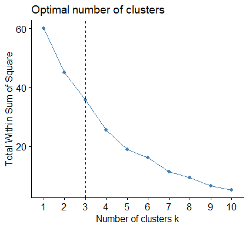
1 | res<-kmeans(b,3) |
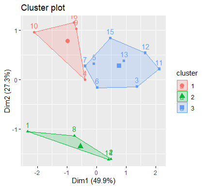
使用K-means动态聚类方法与Ward系统聚类法的聚类结果并不相同，K-means动态聚类方法将饮料分为三类的结果是{1,8,12,14},{4,9,10,16},{3,5,6,7,11,12,13,15}
（2）中国31个城市2011年的空气质量数据，根据这个数据对31个城市进行聚类分析。
1 | > head(mydata) |
这次先进行K-means动态聚类法。
首先我根据动态聚类法判定类别数，$k=5$时出现拐点，分成五类合适。
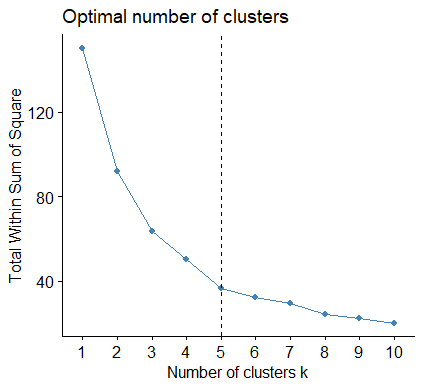
绘制动态聚类结果
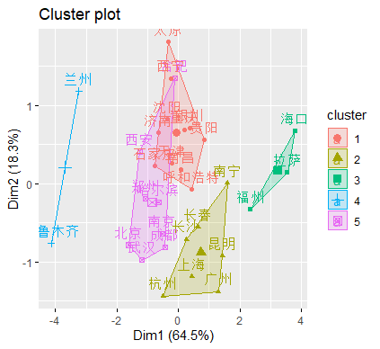
根据可吸入颗粒物(PM10)、二氧化硫(SO2)、二氧化氮(NO2)、空气质量达到及好于二级的天数(天)、空气质量达到二级以上天数占全年比重(%)这几个变量，用K-means动态聚类法将城市分成五类，结果如下：
1 | > rownames(res1)[res1$`res$cluster`=="1"] |
- WARD系统聚类法
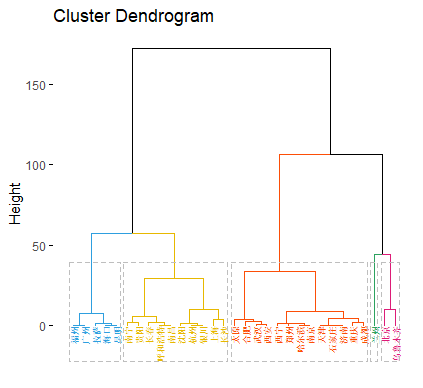
我精挑细选的配色，绘图的关键在配色（√）
使用WARD系统聚类法的聚类结果为
第一类：{“福州” “广州” “拉萨” “海口” “昆明”}
第二类：{“南宁” “贵阳” “长春” “呼和浩特” “南昌” “沈阳” “杭州” “上海” “长沙”}
第三类：{“太原” “合肥” “武汉” “西安” “西宁” “郑州” “哈尔滨” “南京” “天津” “石家庄” “济南” “重庆” “成都”}
第四类：{“兰州”}
第五类：{“北京” “乌鲁木齐”}
下面我们通过热图的方法发现类并确定类的个数。
用result表示两两样本间的欧式距离矩阵，距离越近相关性越高。
1 | result <- dist(mydata, method = "euclidean") |
通过热图发现类
1 | heatmap(as.matrix(result), labRow = F, labCol = F) |
在图中可以看出颜色越深，距离越近。通过观察感觉分成五类或六类OK，分成两类也似有道理但总觉得两类太少了点。
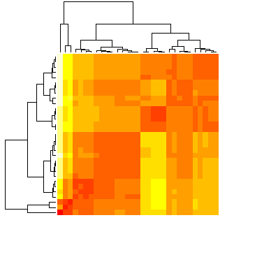
确定类的个数为五类
1 | result_hc <- hclust(d = result, method = "ward.D2") |
采用多维标定，用第一和第二主成分，表示原本分类。
1 | mds = cmdscale(result, k = 2, eig = T) |
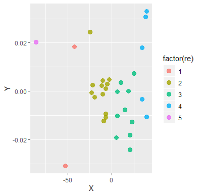
系统聚类法和动态聚类法的优缺点
系统聚类法：
优点：可解释性好，可以考虑先取K比较大的K-means后，合并阶段用系统聚类也许能产生更高质量的聚类。
缺点：时间复杂度高。
动态聚类法：
优点：适用于大样本的Q型聚类分析。大型数据一般较集中，异常值影响较弱。且算法简单高效，时间复杂度低。
缺点：依赖初始$K$个点的选取或说依赖于初始划分，容易落入局部最优。对噪声和离群值敏感。
动态聚类法的改进方法：为了检验聚类的稳定性，可用一个新的初始分类重新检验整个聚类算法。如最终分类与原来一样，则不必再进行计算；否则，须另行考虑聚类算法。
主成分分析
- 由于变量个数太多，且彼此有相关性，从而数据信息重叠。
- 当变量较多，在高维空间研究样本分布规律较复杂
于是我们希望，用较少的综合变量代替原来较多变量，又能尽可能多地反映原来数据的信息，并且彼此之间互不相关。
叮！这就孕育了主成分分析！
设$X=(X_1,X_2,…,X_p)’$为$p$维随机向量。称$Z_i=a_i’X$为$X$的第$i$主成分$(i=1,2,…,p)$，如果：
- $a_i’a_i=1\ (i=1,2,…,p)$;
- when $i>1$, $a_i’\Sigma a_j=0\ (j=1,….,i-1)$;
- $Var(Z_i)=max_{a_i’a_i=1,a_i’\Sigma a_j=0\ (j=1,….,i-1)}Var(\alpha’ X)$
易见，$Var(Z_i)$越大表明$Z_i$蕴含信息越多，此时可见$a_i$需要有限制否则方差可以趋于无穷，常用限制为$a_i’a_i=1$. 而我们不想信息重复，于是又有$Cov(Z_i,Z_j)=a_i’\Sigma a_j=0\ (j\neq i)$. 这时我们不难理解上述对主成分的定义了。
一般地，求$X$的第$i$主成分可通过求$\Sigma$的第$i$大特征值所对应的特征向量得到。
Thm 设$X=(X_1,X_2,…,X_p)’$是$p$维随机向量，且$D(X)=\Sigma$，$\Sigma$的特征值为$\lambda_1\geq\lambda_2\geq…\geq\lambda_p\geq 0$，$a_1,a_2,…,a_p$为相应的单位正交特征向量，则$X$的第$i$主成分为
$$Z_i=a_i’X\ (i=1,2,…,p)$$
下面这张图就形象地展现了如何利用主成分分析将二维降至一维。
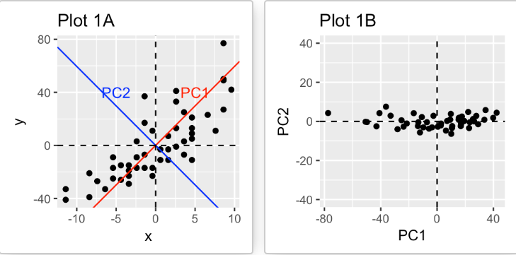
注意，当数据集中的变量高度相关时，PCA方法特别有用。 相关性表明数据中存在冗余。 由于这种冗余，PCA可用于将原始变量减少为较少数量的新变量（=主成分），从而解释了原始变量中的大多数方差。
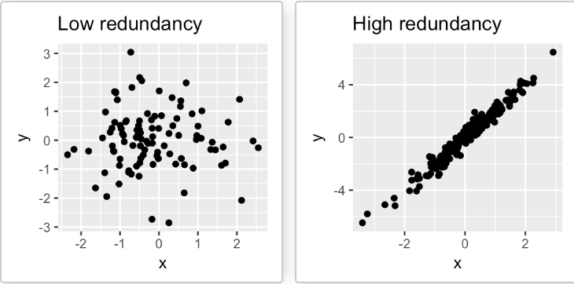
以下解释贡献率的概念，贡献率的大小又能说是解释了总体方差的多少。
我们称$\lambda_k / \Sigma_{i=1}^{p}\lambda_i$为主成分$Z_k$的贡献率；又称$\Sigma_{k=1}^{m}\lambda_k / \Sigma_{i=1}^{p}\lambda_i$为主成分$Z_1,…,Z_m(m<p)$的累计贡献率。
（3’）我国2010你那各地区城镇居民家庭平均每人全年消费数据，这些数据指标分别从食品（x1）,衣着，居住，医疗，交通，通信，教育，家政和耐用消费品来描述消费。试对该数据进行主成分分析。
1 | > head(data) |
1 | pr<-princomp(data,cor=TRUE) |
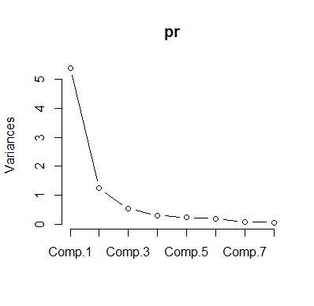
根据碎石图转折点在2个主成分或3个主成分
主成分分析结果：
1 | > summary(pr,loadings=TRUE) |
可以发现当选用前三个主成分时，已经解释了接近90%的方差，所以我认为选取三个主成分进行降维是合理的。
FactoMineR
下面我们用FactoMineR包来对同样的数据作PCA，它的展示效果更好。
- 计算变量的主成分
1 | res.pca <- PCA(data, graph = FALSE) |
- 观察特征值，它代表了每个主成分的方差
1 | > eig.val |
- 观察碎石图
1 | fviz_eig(res.pca, addlabels = TRUE, ylim = c(0, 50)) |
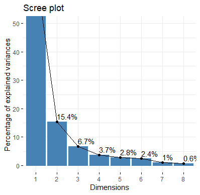
从PCA输出中提取变量结果的一种简单方法是使用函数get_pca_var（）[factoextra package]。 该函数提供了一个矩阵列表，其中包含活动变量的所有结果（坐标，变量与轴之间的相关性，余弦平方和贡献）
1 | > var <- get_pca_var(res.pca) |
1 | > # Coordinates |
可以看出在第一主成分中，食品、居住、交通通讯和教育贡献率较大，而在第二主成分中医疗贡献率较大，在第三主成分中衣着贡献率较大。
- Correlation circle
The correlation between a variable and a principal component (PC) is used as the coordinates of the variable on the PC i.e. variables are represented by their correlations.
1 | fviz_pca_var(res.pca, col.var = "black") |
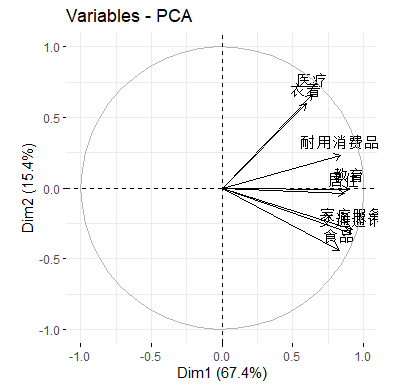
- Quality of representation
The quality of representation of the variables on factor map is called cos2 (square cosine, squared coordinates) .
其实吧……我觉得它的第一主成分就包含了足够多的信息哈哈，把它直接降至一维就很不错。
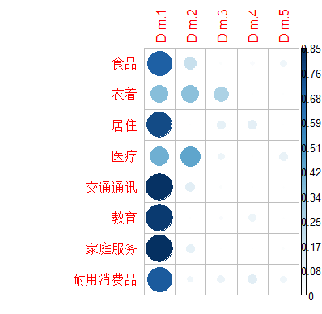
It’s also possible to create a bar plot of variables cos2 using the function fviz_cos2()[in factoextra]
1 | # Total cos2 of variables on Dim.1 and Dim.2 |
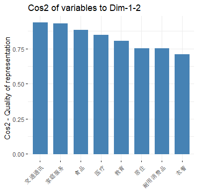
A high cos2 indicates a good representation of the variable on the principal component. In this case the variable is positioned close to the circumference of the correlation circle.
A low cos2 indicates that the variable is not perfectly represented by the PCs. In this case the variable is close to the center of the circle.
而我们发现大部分的变量的cos2均较高，这与这些变量在之前的相关圆中接近圆周是一致的。这也表明用两个主成分能很好地反应这些变量的信息。
下用颜色代表不同的gradient重新绘制 color variables by their cos2 values
1 | # Color by cos2 values: quality on the factor map |
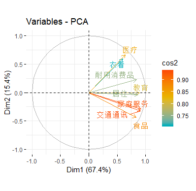
那就写到这里吧，更多关于PCA分析绘图可以看ref链接XD